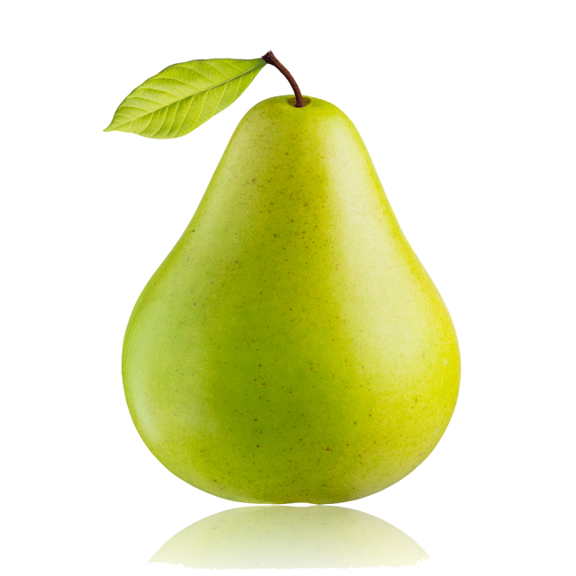

Bienvenidos
Este sitio web forma parte del proyecto transversal sobre las frutas de temporada que se producen en Villa de Allende. Aquí encontrarás información sobre las frutas locales, sus beneficios y temporadas ideales.
Frutas típicas
- Manzana
- Pera
- Durazno
- Ciruela
- Fresa
Beneficios de consumir frutas locales
Las frutas de temporada aportan frescura, sabor y nutrientes, además de apoyar la economía local y reducir el impacto ambiental.
Galería
